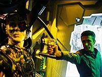
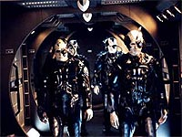

|
MANCHETE
DO EPISÓDIO
Borgs
protegem continuidade, mas
esbarram na incompetência
Episódio
anterior | Próximo
episódio
Sinopse:
Um grupo de pesquisadores no Ártico descobre destroços de uma nave espacial em forma de esfera acidentada há cem anos na Terra. Junto aos detritos eles encontram dois cadáveres, pertencentes a seres cibernéticos de uma espécie nunca antes vista.
Os três cientistas percebem que os corpos estão se regenerando e, após alguma discussão, decidem que o processo siga seu curso. Embora eles até antecipassem uma possível reação hostil, os alienígenas recém-ressuscitados exploraram o fator-surpresa e injetaram nanossondas nos corpos dos humanos, rapidamente infectando-os e assimilando-os a seu grupo.
Após a perda de contato com o grupo de pesquisa, o comandante Williams e o almirante Forrest vão verificar o que aconteceu no Ártico. Descobrem que nenhum dos pesquisadores ou dos cadáveres estão lá. Todos eles supostamente teriam partido na pequena nave de transporte, modificada com tecnologia alienígena.
Ela agora viaja para fora do setor da Terra a uma velocidade de dobra 3,9. Por sorte, sua trajetória deve passar perto da Enterprise, que então é convocada a investigar e fazer o possível para resgatar os humanos. Archer ordena o início das buscas, mas antes que eles tenham qualquer sucesso, recebem um pedido de socorro de uma nave
Tarkaleana.
Ao atenderem ao chamado, confirmam o que já desconfiavam: são os alienígenas fugidos da Terra os responsáveis pelo ataque. Eles conseguem combater os inimigos, que acabam fugindo em dobra, e resgatar dois
Tarkaleanos. Phlox constata que ambos estão infectados com as nanossondas e inicia um tratamento na tentativa de salvá-los.
Apesar do esforço, não há sucesso e os Tarkaleanos subitamente iniciam um ataque dentro da Enterprise. Após fugir da enfermaria (onde eles contaminam Phlox com nanossondas), eles vão a uma seção da nave e começam a alterar os circuitos internos. Malcolm Reed e um grupo de segurança são enviados para detê-los, mas não têm sucesso, depois que os alienígenas apresentam escudos de energia que os protegem dos disparos das pistolas de fase.
A única alternativa é selar aquela seção da nave e abrir a escotilha, cuspindo os alienígenas à marra para o espaço. Relutantemente, Archer adota o plano e consegue conter o ataque, mas não antes que os sistemas da Enterprise tenham sido estranhamente modificados. A NX-01 retoma seu curso de perseguição aos alienígenas, enquanto Trip tenta desfazer a bagunça que os alienígenas fizeram.
Enquanto isso, Phlox começa a trabalhar num meio de se livrar da infecção, que parece ser mais lenta por conta de seu metabolismo Denobulano, mas ainda assim está caminhando. Reed também passa a trabalhar num meio de modificar as pistolas para que superem os campos de força individuais dos alienígenas.
Enquanto isso, Archer compartilha com T'Pol informações extraídas de um velho discurso de Zefram Cochrane, feito 89 anos atrás, em que o inventor da dobra espacial mencionava que, durante o Primeiro Contato, a Terra foi visitada por alienígenas cibernéticos hostis, que por sua vez foram combatidos por um grupo de humanos vindos do futuro. Archer acredita que haja um elo, mas T'Pol lembra-o de que Cochrane era famoso por suas metáforas e que estava constantemente embriagado.
Conforme a Enterprise volta a se aproximar dos alienígenas, Archer decide que tentará salvar os humanos e
Tarkaleanos capturados, por mais que seja improvável sua sobrevivência livre da contaminação. Phlox parece ter progressos com seus esforços e decide se submeter a um tratamento por radiação ômicron, na tentativa de destruir as nanossondas. Reed também tem sucesso na modificação das pistolas de fase.
A NX-01 finalmente se aproxima da nave modificada pelos alienígenas cibernéticos, desta vez mais poderosa do que nunca. Archer já está pronto para iniciar o ataque quando os circuitos instalados pelos
Tarkaleanos assimilados na Enterprise subitamente entra em operação, deixando a nave humana à deriva no espaço.
Numa tentativa desesperada, Archer e Reed decidem se transportar a bordo da nave alienígena e usar dispositivos explosivos para danificá-la por dentro. Enquanto isso, a Enterprise é abordada e seus oficiais de segurança conseguem, com muito custo, reduzir a taxa de avanço dos seres hostis.

Archer e Reed vão à nave alienígena via teletransporte e, após derrubarem vários alienígenas, têm sucesso com o processo de sabotagem. Com os problemas, os invasores a bordo da Enterprise se transportam de volta para sua nave. O capitão, já de volta à NX-01, ordena um ataque maciço à nave alienígena, que é destruída. Phlox, por sua vez, emerge com sucesso de seu tratamento experimental. Ele revela a Archer que, por alguns momentos, esteve em contato com os alienígenas, e que eles tentavam desesperadamente enviar uma mensagem para o quadrante Delta, com um conjunto de números.
O capitão alimenta o computador da Enterprise com esses números e descobre que são dados de pulsares, servindo como coordenadas para a indicação de onde está a Terra. Caso a mensagem tenha sido mandada, T'Pol conclui que em 200 anos ela estará chegando ao mundo natal dos alienígenas. O que quer dizer que provavelmente eles voltarão a ser problema para a humanidade no século 24, conclui Archer...
Comentários:
"Regeneration" nasceu de uma boa idéia para atar eventos vistos em
"Q Who?", em A Nova Geração, e o ocorrido em
"Jornada nas Estrelas: Primeiro Contato", parcialmente ambientado no século 21. Claramente o tema é inspirado por conhecimento da cronologia e uma idéia interessante.
Tudo isso dito, é impossível negar o fato de que apresentar os Borgs em
Enterprise é, no mínimo, um grosseiro erro estratégico. Mesmo que o "truque" cronológico usado pelos roteiristas tivesse embasamento, seria muito difícil desenvolver uma história com uma das mais perigosas espécies alienígenas do século 24 e ser verossímil e fiel ao suposto espírito "retrô" da série de Archer e cia.
Foi a armadilha em que incorreram os produtores neste segmento. Seu grau de violação da continuidade é similar ao de
"Acquisition", na temporada passada, que, apesar de seus problemas, pode ser perfeitamente contornado com a típica suspensão da descrença peculiar a todo fã típico de
Jornada nas Estrelas. Seu problema maior é a inverossimilhança, não a violação da continuidade. Veja a sutileza e a gravidade da diferença. Quando a continuidade é violada, quer dizer que o episódio está mostrando algo que, em tese, não teria acontecido. Quando a verossimilhança é maculada, o episódio mostra algo que não PODERIA ter acontecido. Jamais. Não é um problema histórico. É um problema de coerência. Lógica. Não importa se estamos numa série pré-Clássica ou pós-Voyager, o problema não se resolve de jeito nenhum.
Quer exemplos? Como uma pistola de fase do século 22 pode ser melhor adaptada que um poderoso feiser do século 24 para neutralizar os Borgs? Como o doutor Phlox pode em tão pouco tempo desenvolver uma cura para as nanossondas Borgs, se mesmo 200 anos depois o procedimento é altamente complexo? E por que cargas d'água ele é tão mais resistente às nanossondas a ponto de sofrer uma assimilação em câmera lenta, como acontece aqui? E como a nave reformada pelos Borgs é tão poderosa em comparação ao modelo original e ao mesmo tempo nem teve a instalação de escudos capazes de impedir o teletransporte de Archer e Reed?
Esse grau de problema é um velho conhecido dos fãs e já permeou a maioria dos episódios que utilizaram (e banalizaram) os Borgs como vilões, principalmente em
Voyager. Só que aqui temos o mesmo tipo de incoerência, mas com 200 anos de atraso tecnológico, o que perfaz um agravante não muito pequeno.

Com relação à continuidade, o episódio pode até ser encaixado, a exceção de pequenos problemas, como o pouco conhecimento da Frota Estelar sobre os seres cibernéticos durante o primeiro contato "oficial", quando poderia ser constatado, via bancos de dados, que esses eram os mesmos seres que foram exaustivamente estudados, no século 22. Eu posso até engolir que fosse uma novidade para Picard encontrar o cubo Borg e Guinan revelar ao capitão alguma trivia a respeito daquela espécie -- o bom e velho Jean-Luc não tinha a obrigação de saber de cor tudo que está contido no poderoso computador da Enterprise-D. Mas a lógica dita que, num segundo momento, ele ordenou a algum alferes de plantão que procurasse qualquer informação sobre aquela espécie nos bancos de dados. E, então, surpresa: um obscuro médico Denobulano, chamado Phlox, já teria publicado um estudo sobre como combater nanossondas de uma espécie cibernética desconhecida com raios ômicron e evitar a assimilação! Imagine o que as doutoras Pulaski e Crusher não poderiam fazer com esse grande "head-start"? (Para provar que isso seria o natural, basta ver as relações estabelecidas entre os episódios
"The Naked Time" e "The Naked Now", e a forma com que Picard e sua turma se livraram da infecção.)
Nem todo mundo, entretanto, está preocupado com esse tipo de elucubração. Muitas vezes, o interesse de um telespectador (provavelmente não um fã assíduo) é simplesmente se sentar em frente à TV e assistir a algo que seja capaz de atraí-lo, ter vontade de acompanhar a narrativa.
Nesse sentido, destacado do universo de Jornada nas Estrelas,
"Regeneration" pode até funcionar. Paradoxalmente, seu maior apelo inicial seria voltado para os fãs de longa data, que soubessem muito bem quem são os Borgs e o que eles estão fazendo lá. O que não faz dele um episódio realmente
memorável entre os que figuram na segunda temporada de Enterprise.
Encaro um problema o fato de que os primeiros dez minutos dos 42 disponíveis se passam sem uma aparição sequer da Enterprise e do elenco regular. Passamos boa parte do tempo com o trio de cientistas no Ártico, desvendando os nefastos segredos Borgs. Também não ajuda a verossimilhança ver o almirante Forrest e o comandante Williams, pessoalmente, indo ao pólo verificar o que aconteceu com os pesquisadores desaparecidos. A Frota Estelar do século 22, ao que parece, sofre com uma séria falta de pessoal, para que dois de seus principais integrantes partam a campo para uma situação misteriosa e potencialmente perigosa.
Quando chegamos à Enterprise, descobrimos que os humanos são realmente uns caras de sorte. A nave tomada pelos Borgs está indo exatamente na direção da única nave terrestre capaz de vôo interestelar razoavelmente eficiente. Se os Borgs fossem para o outro lado, o que seria de nós?
Pelo menos, os rostos familiares estão de volta à história e um senso de objetivo é criado em torno do enredo -- precisamos interromper a nave alienígena e salvar os pesquisadores "sequestrados". Archer tem um pouco de dificuldade para aceitar que os sequestrados na verdade foram assimilados, e não podem ser salvos. Felizmente, ele percebe isso antes de fazer muitas bobagens.
A partir do primeiro confronto com os Borgs, o segmento ganha ritmo e se torna uma aventura interessante, a despeito de todos os problemas. Os amantes de efeitos especiais provavelmente ficarão satisfeitos, assim como os afeitos aos episódios com um estilo thriller. Mas, ao final, não sobrará muito a ser lembrado.
O elenco principal, além de seu tempo reduzido de tela, não parece "participar" da trama, mas sim ser carregado por ela. Não há momentos psicológicos realmente interessantes, que mostrem novas facetas dos personagens, ou que os façam crescer. É apenas uma aventura descompromissada. Se você gosta disso, vai gostar de
"Regeneration".
Mas eu não consigo parar de pensar que os Borgs são um vespeiro em que os produtores de
Enterprise não deveriam ter colocado a mão. Eles não pertencem ao século 22, e não há forma verossímil de introduzi-los neste ambiente.
Há fãs de Jornada que já desistiram de considerar Enterprise parte do Universo da franquia. Em vez disso, eles preferem pensar na série como uma espécie de realidade alternativa. Não chego a este ponto (e espero não chegar), mas não posso deixar de relembrar de novo e de novo a frase de Guinan em
"Yesterday's Enterprise", tentando explicar a Picard que a realidade em que estavam não deveria existir. "Simplesmente não parece certo", ela insistia. A mesma coisa se pode dizer dos Borgs em
Enterprise.
Citações:
T'Pol - "Zefram Cochrane was famous for his imaginative stories, and he was also frequently intoxicated."
("Zefram Cochrane era famoso por suas histórias imaginativas, e também estava frequentemente intoxicado.")
Alienígenas - "You will be assimilated. Resistance is futile."
("Vocês serão assimilados. Resistir é inútil.")
Archer - "Sounds to me like we've only postponed the invasion... until... what? The 24th century?"
("Parece para mim que apenas adiamos a invasão... até... quando? O século 24?")
Trivia:
 As filmagens de "Regeneration" foram de 27 de fevereiro de 2003 a 7 de março, embora ainda houvesse fotografia de segunda unidade sendo feita em 10 de março.
As filmagens de "Regeneration" foram de 27 de fevereiro de 2003 a 7 de março, embora ainda houvesse fotografia de segunda unidade sendo feita em 10 de março.
A atriz Bonita Friedericy é esposa de John Billingsley.
Em razão do furor causado pela aparição dos Borgs, um dos roteiristas de
Enterprise apareceu num fórum estrangeiro para tranquilizar os fãs. "Tudo com que vocês estão preocupados, com relação aos Borgs e
Enterprise, não vai acontecer", disse David A. Goodman. "Esse episódio não viola a continuidade. Na verdade... ele serve a ela."
Rick Berman também comentou a aparição, em entrevista. "Um fascinante encontro com os Borgs, que é interessante porque a Frota Estelar nunca tinha ouvido falar dos Borgs antes de Picard. Então conseguimos lidar com isso de um jeito que eu achei muito interessante."
Radiação ômicron destrói nanossondas Borgs, segundo o dr. Phlox.
Até um dos roteiristas do episódio, Michael Sussman, esetve num fórum para prestar esclarecimentos. "O que fez os Borgs se interessarem por nossa parte da galáxia? A Coletividade teve algum tipo de 'informação privilegiada' sobre a Terra ou a Federação? Sem entregar muito, posso dizer com segurança que
'Regeneration' vai apresentar uma possível resposta. No mínimo, espero que dê o que pensar."
Ficha
técnica:
Escrito por Mike Sussman &
Phyllis Strong
Direção de David Livingston
Exibido em 07/05/2003
Produção:
049
Elenco:
Scott
Bakula como Jonathan Archer
Jolene Blalock como
T'Pol
John Billingsley
como Phlox
Anthony Montgomery
como Travis Mayweather
Connor Trinneer como
Charlie 'Trip' Tucker III
Dominic Keating como
Malcolm Reed
Linda Park como Hoshi Sato
Elenco convidado:
Christopher Wynne como Moninger
Bonita Friedericy como Rooney
John Short como Drake
Paul Anthony Scott como Foster
Adam Harrington como pesquisador
Vaughn Armstrong como almirante Forrest
Jim Fitzpatrick como comandante Williams
Mark Chadwick como Tarkaleano
Nicole Randal como Tarkaleana
Episódio
anterior | Próximo
episódio
|